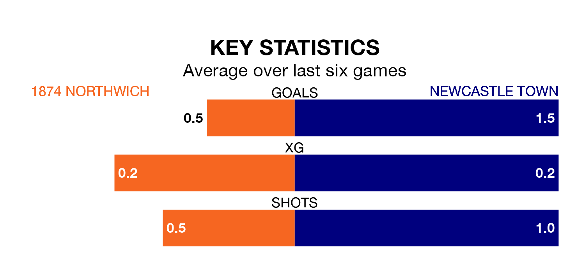

1874 Northwich face Newcastle Town on Saturday looking to secure a first win in 21 Northern Premier League Division One – West games.
1874 Northwich have lost 16 and drawn four matches since they last earned three points – against Widnes on October 21.
They face a Newcastle side who have won seven and drawn four over that time.
1874 Northwich are bottom of the table after 31 games, of which they have won four and drawn six, earning 18 points.
Newcastle are six places ahead of the hosts in 14th, with 11 wins and six draws putting them on 39 points.
In the last five years, 1874 Northwich and Newcastle have played each other on five occasions. 1874 Northwich won three of them and they drew twice.
On average, 1874 Northwich scored 1.4 goals and Newcastle 0.6 in those matches.
Their last meeting was on September 2, when 1874 Northwich won 1-0 away.
With 22 goals in 31 games so far this season, 1874 Northwich are the league's lowest scorers with 0.7 goals per game. And they are conceding more than average, letting in 68 goals at a rate of 2.2 per game.
Town are also below average scorers, with 1.2 goals per game, compared to a league average of 1.4. They have conceded 1.3 goals per game.
1874 Northwich's last match was on March 23, a 2-2 draw against Trafford.
Newcastle lost 1-0 against Prescot Cables last time out, also on March 23.
Updated: 12:16 (UTC), 25/03/24